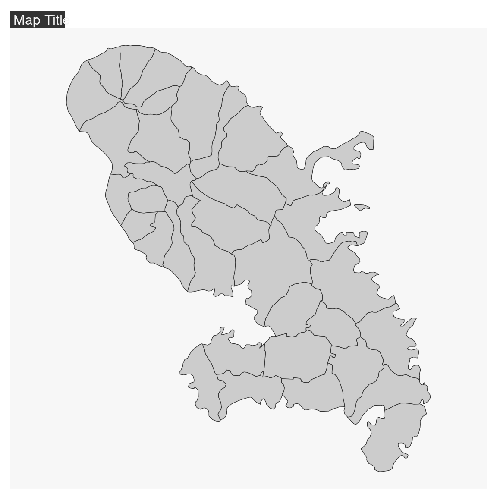
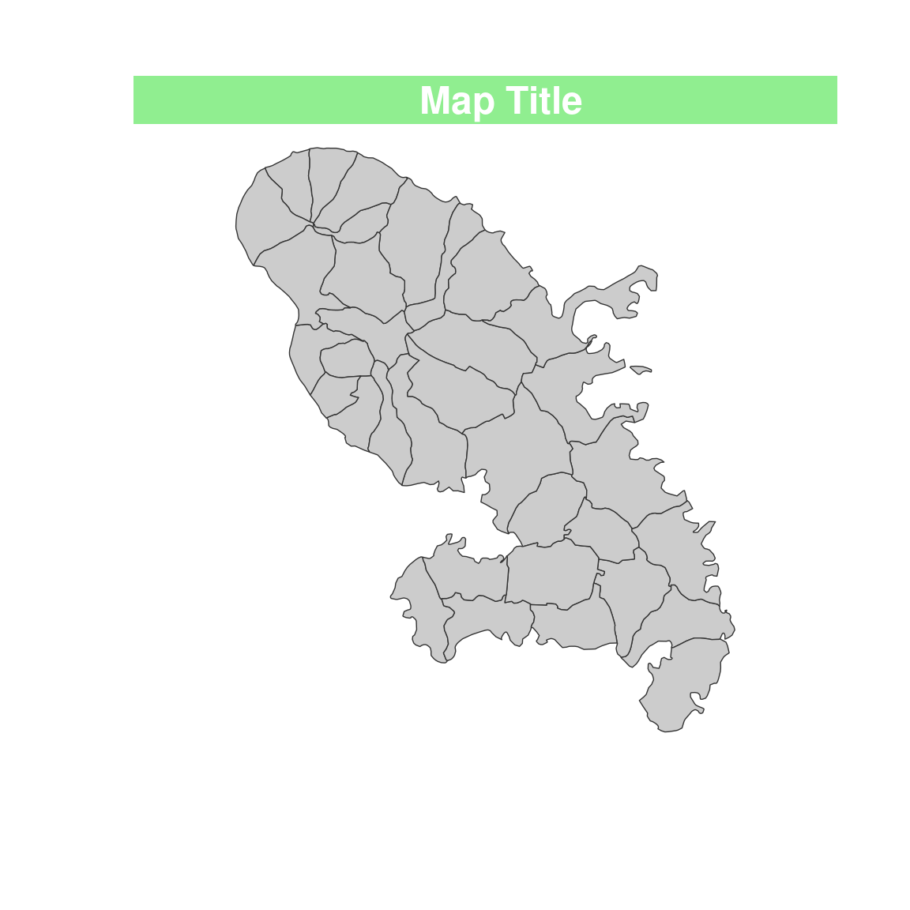

This function set a map theme. The parameters set by this function are the figure margins, background and foreground colors and some mf_title options.
mf_theme(x = "default", bg, fg, mar, tab, pos, inner, line, cex, font)
Arguments
| x | name of a map theme. One of "default", "brutal", "ink", "dark", "agolalight", "candy", "darkula", "iceberg", "green", "nevermind", "jsk", "barcelona". If x is used other parameters are ignored. |
|---|---|
| bg | background color |
| fg | foreground color |
| mar | margins |
| tab | if TRUE the title is displayed as a 'tab' |
| pos | position, one of 'left', 'center', 'right' |
| inner | if TRUE the title is displayed inside the plot area. |
| line | number of lines used for the title |
| cex | cex of the title |
| font | font of the title |
Value
The (invisible) list of theme parameters is returned.
Details
It is also possible to set a custom theme using a list of arguments
(see Examples).
Use mf_theme('default') to reset theme settings.
mf_theme() returns the current theme settings.
Examples
# theme from arguments mf_theme( bg = "darkslategrey", fg = "cornsilk3", mar = c(2, 2, 4, 2), tab = FALSE, pos = "center", inner = FALSE, line = 2, cex = 2, font = 4 ) mf_map(mtq)# theme from list custom <- list( name = "custom", bg = "green", fg = "red", mar = c(2, 2, 2, 2), tab = TRUE, pos = "center", inner = TRUE, line = 2, cex = 1.5, font = 3 ) mf_theme(custom) mf_map(mtq)(mf_theme("default"))#> $name #> [1] "default" #> #> $bg #> [1] "#f7f7f7" #> #> $fg #> [1] "#333333" #> #> $mar #> [1] 0.5 0.5 1.7 0.5 #> #> $tab #> [1] TRUE #> #> $pos #> [1] "left" #> #> $inner #> [1] FALSE #> #> $line #> [1] 1.2 #> #> $cex #> [1] 1 #> #> $font #> [1] 1 #>